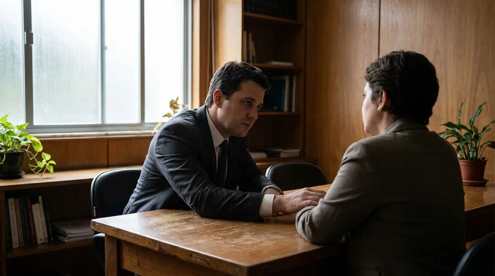
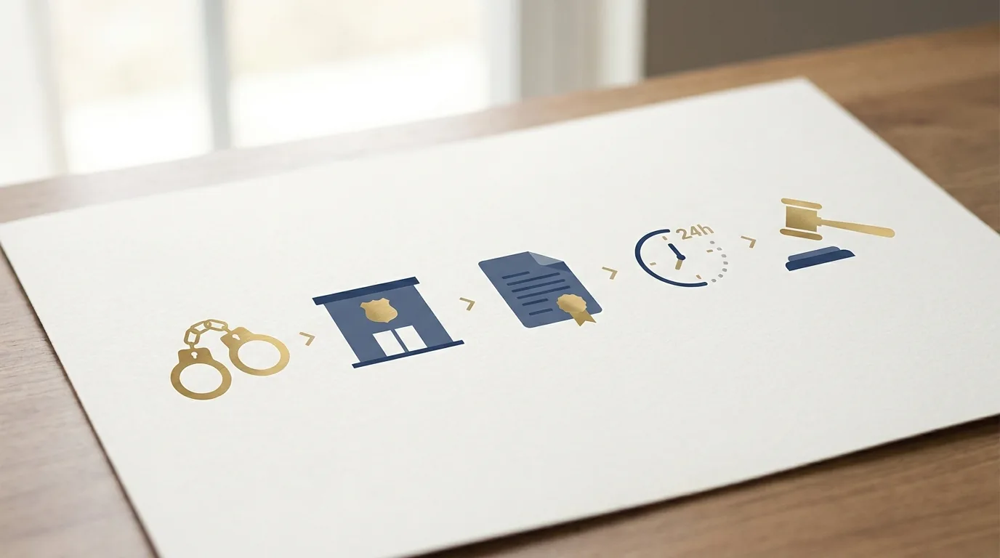
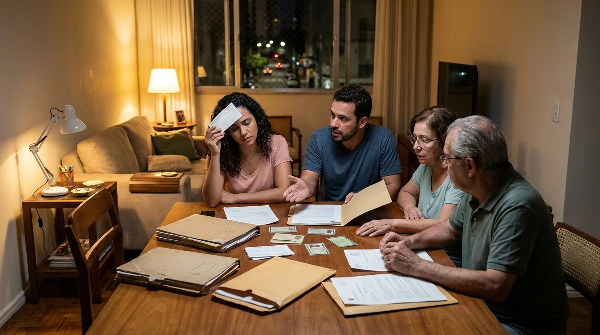

Audiência de Custódia: Como Funciona e o que Vem Depois
O telefone toca de madrugada, alguém da família foi preso e, no meio das informações desencontradas, surge uma expressão que a maioria das pessoas nunca ouviu: audiência de custódia. Ela vai acontecer em poucas horas e pode definir se a pessoa volta para casa ou permanece presa enquanto o caso é investigado.
Poucas horas é literal. A lei determina que toda pessoa presa em flagrante seja apresentada a um juiz em até 24 horas. Esse encontro é a audiência de custódia, e é nele que se decide o destino imediato do preso. Não é o julgamento, não se discute culpa, mas o resultado muda completamente os próximos meses da família.
Este guia explica o que é a audiência de custódia, como ela funciona na prática, quais são os três desfechos possíveis e, principalmente, o que acontece depois de cada um. É o mapa que a família precisa para atravessar as primeiras 48 horas com alguma clareza, em vez de decidir tudo no escuro.
O que é a audiência de custódia e por que ela existe
A audiência de custódia é a apresentação da pessoa presa, sem demora, a um juiz. O objetivo é duplo: verificar se a prisão foi legal e checar como o preso foi tratado desde a abordagem. O fundamento está em tratados internacionais de direitos humanos assinados pelo Brasil, na Resolução 213/2015 do CNJ (Conselho Nacional de Justiça, órgão que fiscaliza o Judiciário) e no art. 310 do Código de Processo Penal.
Antes de 2015, uma pessoa presa em flagrante podia esperar semanas até ser vista por um juiz. Toda a comunicação acontecia no papel: o auto de prisão, o documento que registra o flagrante na delegacia, ia para o fórum, e o juiz lia e decidia sem nunca olhar para o preso. A audiência de custódia mudou isso. Hoje o contato é direto, em regra presencial, e a decisão sai nas primeiras 24 horas.
Um ponto que confunde muita gente: a audiência de custódia não discute se a pessoa é culpada ou inocente. O juiz não vai analisar provas do crime nem ouvir testemunhas. A pergunta central é outra: essa prisão foi legal e precisa continuar? O mérito, isto é, a discussão sobre os fatos, fica para o processo que talvez venha depois.
Essa separação explica um aparente paradoxo que revolta famílias: casos em que "todo mundo sabe" que a pessoa é inocente e mesmo assim ela permanece presa, e casos com forte suspeita em que o juiz solta. A custódia não julga a história; julga a necessidade da prisão. Entender isso cedo poupa a família de gastar a audiência com o argumento errado e ajuda a defesa a concentrar munição no que realmente decide o dia.
Também não é um interrogatório disfarçado. O juiz pergunta sobre as circunstâncias da prisão e sobre o tratamento recebido, e a lei proíbe usar a audiência para colher confissão. Se houver relato de agressão ou tortura, o juiz deve registrá-lo e encaminhar o caso para apuração.
Atenção: na audiência de custódia, falar demais sobre os fatos costuma prejudicar. O momento é de discutir a prisão, não o crime. A orientação do advogado antes da audiência existe justamente para o preso saber o que responder e o que guardar para a fase certa.
Como funciona a audiência na prática
O caminho até a sala de audiência começa na delegacia. Depois da prisão, o delegado lavra o auto de prisão em flagrante, registrando tudo: quem prendeu, por quê, testemunhas e a versão da própria pessoa presa. Explicamos essa primeira etapa em detalhe no guia sobre prisão em flagrante. Em até 24 horas contadas da prisão, esse auto chega ao juiz junto com o preso.
Participam da audiência de custódia o juiz, o promotor do Ministério Público (que representa a acusação), o advogado do preso (particular ou defensor público) e a própria pessoa presa. Em Florianópolis, as audiências acontecem no fórum, em mutirões diários que reúnem os flagrantes das últimas 24 horas da região.
O roteiro é objetivo. O juiz confirma os dados do preso, pergunta como foi a abordagem, verifica sinais de maus-tratos e ouve o que a defesa e o Ministério Público têm a dizer sobre a prisão. A defesa fala por último, o que permite rebater os argumentos da acusação. Em seguida, o juiz decide na hora, na frente de todos.
A linha do tempo típica ajuda a visualizar o que acontece em cada momento:
| Momento | O que acontece |
|---|---|
| Hora zero | Voz de prisão e condução à delegacia |
| Primeiras horas | Lavratura do auto de prisão em flagrante; comunicação à família e ao advogado |
| Dentro das 24 horas | Auto enviado ao juiz; preso apresentado para a audiência de custódia |
| Minutos antes da audiência | Conversa reservada entre advogado e preso |
| A audiência em si | Perguntas do juiz, manifestações da acusação e da defesa; costuma durar poucos minutos |
| Logo depois | Decisão lida na hora; se houver soltura, expedição do alvará e liberação, em geral no mesmo dia |
O tamanho da audiência surpreende quem espera uma cena de filme: em regra são minutos, não horas. Justamente por isso, o que acontece antes dela pesa tanto. Uma defesa que chega com documentos organizados aproveita cada um desses minutos; uma defesa que chega às cegas gasta o tempo tentando entender o caso.

Antes da audiência, o advogado tem o direito de conversar reservadamente com o preso. Essa conversa de minutos vale ouro: alinha o que será dito, acalma quem está em choque e evita as respostas impulsivas que tantas vezes transformam uma prisão discutível em prisão mantida.

Os três desfechos possíveis
Ao final da audiência de custódia, o art. 310 do Código de Processo Penal dá ao juiz três caminhos. A tabela resume o que cada um significa na prática:
| Decisão | O que significa | A pessoa sai? |
|---|---|---|
| Relaxamento da prisão | A prisão foi ilegal (sem flagrante de verdade, falha no procedimento, prazo estourado) | Sim, imediatamente |
| Liberdade provisória | A prisão foi legal, mas a pessoa pode responder ao processo solta, com ou sem condições | Sim, cumprindo as condições |
| Prisão preventiva | A prisão em flagrante é convertida em prisão por tempo indeterminado, a pedido do Ministério Público | Não, segue presa |
O relaxamento reconhece um defeito na própria prisão. Se não havia situação de flagrante, se o procedimento pulou etapas ou se o prazo de apresentação foi descumprido sem justificativa, a prisão se desfaz. Isso não encerra a investigação: o caso pode continuar, mas com a pessoa em liberdade.
A liberdade provisória é o desfecho mais comum para crimes sem violência. O juiz solta o preso e pode impor medidas cautelares, condições para permanecer em liberdade. Entre elas: comparecer mensalmente ao fórum, não se aproximar de determinadas pessoas, não sair da comarca (o município ou região atendida por aquele fórum) sem autorização, recolher-se em casa à noite ou, em alguns casos, usar tornozeleira eletrônica. Pode haver também fiança, um valor depositado como garantia.
A prisão preventiva é o desfecho mais duro. Desde a reforma de 2019, o juiz não pode decretá-la por conta própria: depende de pedido do Ministério Público ou de representação da autoridade policial. Além disso, a preventiva exige fundamento concreto, como risco real de fuga, ameaça a testemunhas ou perigo à ordem pública, e não pode se apoiar apenas na gravidade abstrata do crime. É aqui que a atuação da defesa na audiência de custódia faz mais diferença: cada argumento rebatido é um fundamento a menos para a preventiva.
O que pesa a favor da liberdade: residência fixa comprovada, trabalho lícito, família na cidade, ausência de antecedentes e disposição para cumprir as condições impostas. São exatamente os documentos que a família consegue reunir enquanto espera, e é por isso que ficar parado é o pior uso dessas horas.
O que acontece depois da audiência de custódia
A decisão da audiência de custódia resolve apenas a situação imediata. O caso continua, e o que vem depois depende do desfecho.
Se a pessoa saiu em liberdade, com ou sem cautelares, a investigação segue o curso normal. O inquérito é concluído pela polícia, o Ministério Público avalia se denuncia, e só então nasce (ou não) o processo criminal. Cumprir as condições impostas é inegociável: descumprimento de cautelar autoriza o juiz a endurecer as medidas ou até decretar a preventiva de quem estava solto.
Vale dizer com clareza: sair solto da audiência de custódia não significa que "deu tudo certo" e o assunto morreu. Uma parte relevante dos inquéritos termina arquivada por falta de provas, e outra parte vira denúncia meses depois, quando a pessoa já baixou a guarda. A defesa que acompanha o inquérito desde cedo influencia esse desfecho: apresenta a versão do investigado no momento certo, indica provas, evita que a versão da abordagem seja a única nos autos. O período entre a soltura e a decisão do Ministério Público é silencioso, mas é nele que muitos casos se ganham.
Se a prisão foi convertida em preventiva, a defesa começa outra corrida. A preventiva não tem prazo fixo, mas deve ser revisada a cada 90 dias, e pode ser atacada por pedido de revogação, quando os fundamentos caem, ou por habeas corpus ao Tribunal de Justiça, quando há ilegalidade. Situações mudam: testemunhas já ouvidas, endereço comprovado, tratamento de saúde necessário. Cada mudança é uma chance de rever a prisão.
Em qualquer cenário, os custos da defesa entram no planejamento da família. Publicamos um guia completo sobre quanto custa um advogado criminalista, com as fases do processo e o que perguntar antes de contratar.
Há ainda um atalho que pouca gente conhece e que age antes mesmo da audiência: em crimes de menor gravidade, com pena máxima de até 4 anos, o próprio delegado pode arbitrar fiança na delegacia. Pagando, a pessoa não espera presa pela decisão do juiz. Saber quais são os direitos de quem foi preso ajuda a família a cobrar essa possibilidade desde o primeiro momento.
O que a família deve fazer nas primeiras horas
Voltando agora às horas que antecedem a audiência, porque é nelas que a família mais pode ajudar. Enquanto o relógio das 24 horas corre, há um papel concreto a cumprir. A audiência de custódia é rápida, e o material que a defesa apresenta nela precisa estar pronto antes.
O primeiro passo é constituir a defesa. Com um advogado criminalista atuando desde a delegacia, a família ganha alguém que acessa o auto de prisão, conversa com o preso e prepara os argumentos com antecedência. Sem advogado constituído, a Defensoria Pública assume na audiência, com o material que houver.

O segundo passo é reunir documentos, e aqui vale um checklist objetivo:
- Comprovante de residência atualizado no nome do preso ou de familiar próximo;
- Prova de trabalho: carteira assinada, contrato, declaração do empregador ou comprovantes de renda autônoma;
- Documentos pessoais (RG, CPF) e certidões de nascimento de filhos pequenos, se houver;
- Receitas e laudos médicos, quando a pessoa faz tratamento contínuo;
- Nome e contato de quem pode confirmar vínculo com a cidade.
O terceiro passo é resistir à ansiedade de resolver tudo por conta própria. Ir à delegacia gritar, procurar o delegado para "explicar a situação" ou mandar mensagens sobre o caso para envolvidos costuma piorar as coisas. Informação desencontrada nas mãos erradas vira argumento contra a liberdade.
Vale citar também os erros mais comuns que as famílias cometem nessas horas, porque todos são evitáveis. Aceitar "despachante" ou intermediário que promete soltura mediante pagamento é o pior deles: além de golpe frequente, qualquer tentativa de atalho ilegal transforma um caso simples em caso grave. Postar sobre a prisão nas redes sociais alimenta versões que depois aparecem no processo. E esconder informações do próprio advogado, por vergonha ou medo, entrega uma defesa pela metade: o profissional é obrigado ao sigilo e só consegue proteger quem conta a história inteira.
Por fim, guarde o nome completo, o número do processo e a vara onde o caso caiu assim que a defesa os obtiver. Esses três dados evitam horas de busca nos dias seguintes e permitem que qualquer familiar acompanhe a movimentação pelo site do tribunal.
Se a prisão aconteceu em Florianópolis ou na região, a Mussi Advocacia & Consultoria, do advogado José Lucas Mussi, OAB/SC 42.936, atende casos de flagrante e acompanha audiências de custódia. Quanto mais cedo a defesa entra, mais dá para construir antes da decisão.
Perguntas frequentes sobre audiência de custódia
A família pode assistir à audiência de custódia?
Em regra, a audiência de custódia é um ato com participantes definidos: juiz, Ministério Público, defesa e preso. A presença de familiares na sala depende da organização de cada fórum e da decisão do juiz. Mesmo sem entrar, a família tem papel decisivo antes, reunindo os documentos que a defesa apresenta.
Quanto tempo depois da prisão acontece a audiência de custódia?
O prazo legal é de 24 horas contadas da prisão para a apresentação ao juiz. Atrasos justificados podem ocorrer, por exemplo, em fins de semana com plantões sobrecarregados, mas o descumprimento sem motivo pode tornar a prisão ilegal e fundamentar o relaxamento.
O juiz pode soltar a pessoa na própria audiência?
Sim. Tanto no relaxamento da prisão ilegal quanto na concessão de liberdade provisória, a soltura é determinada na própria decisão. Cumpridas as formalidades do alvará de soltura, a ordem escrita que autoriza a liberação, a pessoa é solta, em geral no mesmo dia.
O que são as medidas cautelares impostas na soltura?
São condições para responder ao processo em liberdade, previstas no art. 319 do Código de Processo Penal: comparecimento periódico ao fórum, proibição de contato com certas pessoas, proibição de sair da comarca, recolhimento noturno, monitoração eletrônica, entre outras. Descumprir uma cautelar pode levar de volta à prisão.
Audiência de custódia é a mesma coisa que julgamento?
Não. O julgamento analisa culpa e acontece muito depois, ao final do processo. A audiência de custódia analisa apenas a legalidade da prisão e a necessidade de mantê-la. A pessoa pode sair solta da custódia e ainda assim ser processada, como pode permanecer presa e ao final ser absolvida.
O que acontece se a preventiva for decretada?
A pessoa permanece presa enquanto durarem os fundamentos, com revisão obrigatória a cada 90 dias. A defesa pode pedir a revogação ao próprio juiz quando a situação muda e pode impetrar habeas corpus ao tribunal quando enxerga ilegalidade. A preventiva não é definitiva nem significa condenação.
A audiência de custódia é curta, mas concentra decisões que a família sente por meses. Entender o rito, preparar documentos e constituir defesa cedo transforma essas 24 horas de espera impotente em trabalho útil. Se você está vivendo isso agora em Florianópolis, fale com a equipe da Mussi Advocacia & Consultoria e organize os próximos passos com quem lida com esses casos todos os dias.